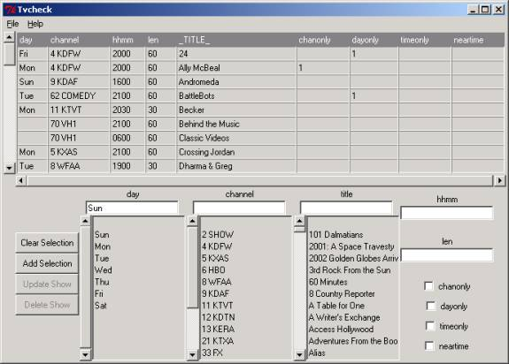

TV-CHECK compares a listing of your favorite TV shows against an actual XMLTV broadcast schedule, and reports changes in your favorite shows as well as any extra episodes.
The TV-CHECK script has two modes, a configure mode, which is used to build a show file and a scan mode to actually do the check.
To use the script, first run a grabber (for example tv_grab_fi) to collect a schedule listing, then run TV-CHECK in configure mode to build a list of shows. Finally, run TV-CHECK in scan mode to produce your report. Once your show list is built, you typically just grab the listings and run the scan.
tv_check --configure ---shows=show_filename ---listing=listing_filename
show_filename defaults to 'shows.xml'
listing_filename defaults to 'tv.xml'
Configure mode brings up a GUI used to create the show file.It uses actual schedule information to assist in choosing your shows.
The application has two major frames. The upper frame contains the shows you want to check, the bottom frame is a selector used to add and modify rows in the upper frame.
Clicking on a column label sorts the table by that column. Clicking again, reversed the sort order.
Clicking on a row populates the selector frame with the contents of that row, to allow you to edit or delete that record.

The selector frame contains entry fields for each column. If you click on a value in a listbox, the associated entry field is automatically populated. If a day and/or channel is selected, the title listbox will contain only titles that match the selected day and/or channel. If you click on a value in a title listbox, all entry fields are populated with details for an episode of that show. There may be other episodes available, so if the one you wanted isn't chosen, correct the entry fields before adding the record.
If the day field is left blank, only a title-scan is performed (see below)
The following options are available (typically used to prevent false alarms due to syndication)
|
TIMEONLY |
The title-scan only returns shows on the selected channel. |
|
DAYONLY |
The title-scan only returns shows on the selected day. |
|
TIMEONLY |
The title-scan only returns shows at the specific time. |
|
NEARTIME |
The title-scan only returns shows within a few hours of the specified time. |
The buttons to the left of the selection frames do the following:
|
CLEAR SELECTION |
Blanks out all entry fields. |
|
ADD SELECTION |
Takes all the entry fields and adds a record to the show table. |
|
UPDATE SHOW |
Replaces the last selected row in the show table with the values in the selection fields. |
|
DELETE SHOW |
Deletes the last selected row in the show table. (selection fields are not used) |
The show file can be saved by an option under the File menu. The File menu also contains selections to open new listing and guide files, as well as exit the program.
tv_check --scan ---shows=show_filename ---listing=listing_filename --output=output_file --html --DDMM
show_filename defaults to 'shows.xml'.
listing_filename defaults to 'tv.xml'.
output_file defaults to standard out.
--html causes the output be in HTML (color). Default is text.
--bluenew causes html output to highlight new episodes in blue
(useful during repeat season)
--DDMM causes Day/Month format in reports. Default is Month/Day (MMDD).
--notruncate will prevent episodes more than 7 days away from being
included in the extra-episode scan.
This command does the actual scan. The scan uses three phases.
In the
first phase, if a specific day/time is provided for the show, that
timeslot is checked to make sure it contains the expected show. If it
does, the sub-title is given. If the timeslot doesn't contain the show,
a warning is given and you're told what's in your shows place.
After the
timeslot is checked, a title-scan is performed that reports any other
episodes matching your show's title. This title-scan can be limited
using the options described above.
Lastly, if the title contains an asterisk (*), a title wildcard scan
is performed. The * can match any character. A title of "*love*"
will hit on any episodes in which "love" appears in the title,
insensitive to case.
This script was created to deal with the TV networks moving everything around.
If this script is helpful, why not drop the author or user email list a note of thanks!
|
Author |
Robert Eden reden@cpan.org |
|
User Mailing List |
|
|
Sourceforge Web Page |
|
|
Project Web Page |